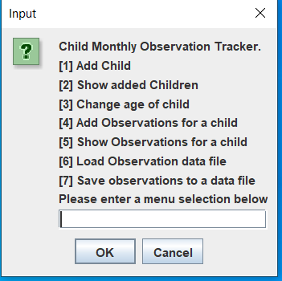

Project Idea
We have chosen Ryan Williams's Project
Project Idea
My project idea is an app that can be used in the Child Care industry. This app will allow educators to track the observations for each learning outcome per child. Currently the Child Care industry requires that observations are completed for each learning outcome on each child monthly. Keeping track of these observations and which learning outcomes are still required for certain children for the month is currently a manual. My app will change the task of keeping track and checking from a long manual task which could take up to 10 or 15 mins down to 1 or 2 mins for checking and 5 mins for updating. The app can be used on the computer in the class room and as the observation is completed the child’s record can be updated with a simple entry.
A simple google will show a huge number of child care centers in your local area. Information from the National Quality Framework 2019 Snapshot [1] shows on page 3 that there are 15,979 childcare education and care services approved to operate under the national quality frame work. My app allows the observations required under this frame work to be collected with ease, thus letting the educator focus on other tasks. My wife works in the child care industry and has always said “there has to be a better way to track the observations, instead of just writing them down manually which is time consuming”.
Currently I have a basic version of this app that has been created in Java, this could be expanded further in Java which will allow it to be cross platform. The app currently saves the amount of observations for each learning out come per child. The main data elements within the app are Child and age which are the minimum requirement to add a child. The other data elements are learning outcomes 1 through 5 which start with a value of 0. You are able to pull the totals for each child at any time. The app auto saves to a “csv” file and loads the content on launch.
To make it end user ready I will need to improve the Ui greatly to make it more user friendly and intuitive. The way the app saves the data could be improved and made to be more secure than a “csv” file by using a database file type. A mobile version of the app could be created but user demand would need to be confirmed first as there may be security concerns from the child care providers around personal devices being used.
When creating the child object, the app automatically creates placeholders for each of the learning outcomes with a value of 0. This is a requirement of the app as the child objects are in 1 array and the observations are stored in another. Without the observation placeholders being created there would be no way currently in the app to link the 2 data sets. This could be improved so that the data is only being created as needed without placeholders, this will need to be investigated in to which would be the best way to achieve this for this app.
As the national requirement changes the app can be easily updated to meet this as the main elements of child and age will always remain the same. There will always be a need to observe the child in some way to ensure they are getting an early education that prepares them correctly for school. Updates can be rolled out to clients by a simple notification via the sign-up email. Once there are a great number of clients it would be wise to implement automation update notifications. This would be a big task on its own. This is not something that is required to be completed for release but would be something that is user friendly and a way to ensure the app is staying in line with the national requirements. The language of Java may not be able to support the required features of the app as it evolves and changes, if this is the case then it would need to be investigated as needed. There are an array of different programming languages and as the app will be written in an object-orientated way, it has the structure that can be transferred to most programming languages. The main thing to keep in mind would be that if the language is not full cross-platform like Java, the app may have to branch to more than 1 variant (Windows and Mac). This would be dependent on what can be implemented in Java.
Using an IDE would be the most efficient way to create the app as it will be able to debug the work on the fly to an extent. The app will need to be tested, so access to at least 1 supported device for each platform is necessary. This testing can also be achieved through a Beta version so the app can receive “real world” testing. Once the app has been released a server to provide the download and updates would be required. The server can either be just “server space” purchased online or one that is built in a location that I have access to. A webpage is a must to provide the app and relevant support. It would be more beneficial to get a website and email hosting package as having specific emails for the app is a must.
To be able to complete this app I will need to have strong Java programming skills and that may evolve to another programming language depending of how the app evolves. Server-side creation and configuration will be required. The ability to create and maintain a website and related email addresses is a must also. Once the app has a large number of users the creation, configuration and maintenance of an update server will be needed. All of these skills, software and hardware are very achievable as long as the correct research and planning has been completed. In this day and age, you can rent server space with a 99.9% uptime guarantee for minimal outlay.
If this app is successful it will allow child care educators to have more focus on the children that they are looking after instead of spending unnecessary time on required paperwork. This will then improve the children’s education experience. Reducing the time spent on paperwork for the educator will also allow for more focus on the education as a whole. Paperwork is a requirement for the national frame work, if the time spent on this paperwork is reduced as whole by making it electronic it will improve the efficiency of the child care center as a whole.